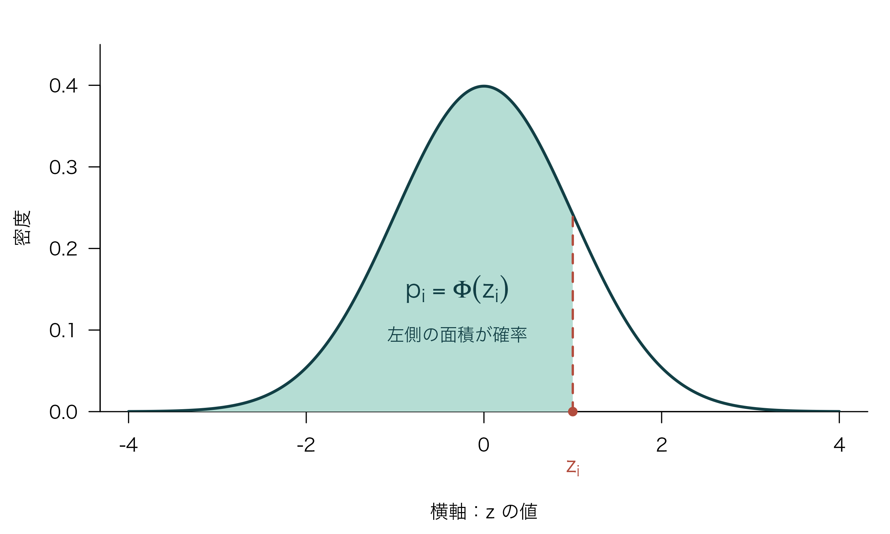
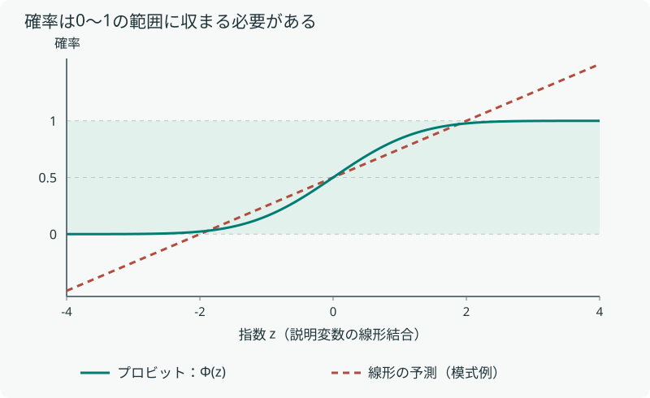
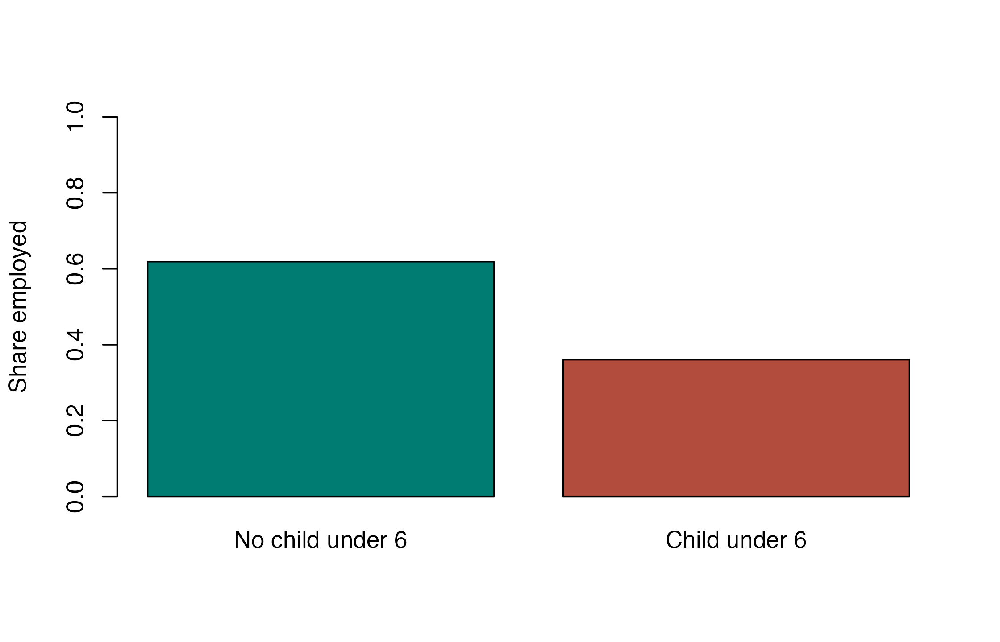

第8回：プロビットモデル
― 線形確率モデルの問題点と対処方法 ―
到達目標
- 被説明変数が0か1のときの線形確率モデルの問題点と、プロビットモデルの仕組みを説明できる。
- プロビットモデルを理解し、Rで分析を行い、結果を解釈できる。
今回は、最小二乗法の適用条件を踏まえ、被説明変数そのものがダミー変数の場合へ進む。理論と推定結果の読み方を確認した後、Rで米国の有配偶女性の就業データを分析する。
1 線形確率モデルの問題点とプロビットモデル
1.1 ダミー変数を被説明変数とした推定モデル
これまでは、消費支出や時給など、量的な変数を被説明変数としてきた。一方、就業するか、商品を購入するか、海外に進出するか、ボランティアに参加するかという選択は、二つの値をとるダミー変数として表せる。
例えば、正規雇用で就業しているかどうかを調べるなら、次のように定義する。
\[ Y_i=\begin{cases} 1 & \text{正規雇用で就業している}\\ 0 & \text{それ以外} \end{cases} \]
教育年数や年齢などの説明変数を用い、どのような条件の人が \(Y_i=1\) になりやすいかを調べる。被説明変数が離散的な選択を表すモデルは、離散選択モデルや質的変数モデルと呼ばれる。今回は、そのうち二値の結果を扱う。
第6回では説明変数にダミー変数を用いたが、今回は被説明変数が0か1をとる場合を扱う。
1.2 線形確率モデルの問題点
\(Y_i\) は、0か1のいずれかをとる被説明変数である。説明変数全体を \(\mathbf{X}_i\) と書き、その説明変数の値が与えられたときに、\(Y_i\) が1となる確率を、\(p_i\) と定義する。
\[ p_i\equiv\Pr(Y_i=1\mid\mathbf{X}_i) \]
\(\Pr\) は確率、縦線 \(\mid\) は「右側の条件を与えた下で」という意味である。添字 \(i\) は観測対象を表し、説明変数の値が異なれば、その条件の下での確率 \(p_i\) も異なりうる。
例えば、説明変数を教育年数 \(X_i\) 一つとすると、
\[ \Pr(Y_i=1\mid X_i=16) \]
は「教育年数が16年であるという条件の下で、正規雇用で就業している確率」を表す。縦線の右側の \(X_i=16\) が条件、左側の \(Y_i=1\) が確率を求めたい事象である。
\(Y_i\) は0か1しかとらず、二つの確率の合計は1なので、
\[ \Pr(Y_i=0\mid\mathbf{X}_i) =1-\Pr(Y_i=1\mid\mathbf{X}_i) =1-p_i \]
となる。
離散変数の期待値は、取りうる各値に、その値をとる確率を掛け、すべて足し合わせたものである。条件付き期待値でも同じように、説明変数を条件とした確率を使って計算する。
\[ \begin{aligned} E(Y_i\mid\mathbf{X}_i) &=\sum_{y\in\{0,1\}}y\,\Pr(Y_i=y\mid\mathbf{X}_i)\\ &=0\times\Pr(Y_i=0\mid\mathbf{X}_i) +1\times\Pr(Y_i=1\mid\mathbf{X}_i)\\ &=0\times(1-p_i)+1\times p_i\\ &=p_i \end{aligned} \]
0をとる場合の項は0になり、1をとる場合の項は \(p_i\) になる。そのため、0・1変数の条件付き期待値は、1となる条件付き確率に等しい。 これは0・1変数の性質から導かれる関係であり、線形確率モデルやプロビットモデルを仮定しなくても成り立つ。
線形確率モデルへのつながり
この関係を使い、確率を説明変数の線形の式で表すのが線形確率モデル（LPM）である。ここからは説明変数を一つとして、\(X_i\) と書く。
\[ Y_i=a+bX_i+u_i,\qquad E(u_i\mid X_i)=0 \]
この式の両辺について、\(X_i\) を条件とした期待値をとる。\(X_i\) が与えられていれば \(a+bX_i\) は決まった値なので、そのまま外に出せる。
\[ \begin{aligned} E(Y_i\mid X_i) &=E(a+bX_i+u_i\mid X_i)\\ &=a+bX_i+E(u_i\mid X_i)\\ &=a+bX_i \end{aligned} \]
先ほどの \(E(Y_i\mid X_i)=p_i\) と合わせると、次の式が得られる。
\[ p_i=\Pr(Y_i=1\mid X_i)=a+bX_i \]
この式は、\(Y_i=1\) となる確率を、説明変数 \(X_i\) の一次式で表すことを意味する。横軸に \(X_i\)、縦軸に確率 \(p_i\) をとると、切片が \(a\)、傾きが \(b\) の直線になる。
\(a\) は \(X_i=0\) のときのモデル上の確率、\(b\) は \(X_i\) が1単位大きくなったときの確率の変化量（\(100b\) パーセントポイント）を表す。線形確率モデルでは、この変化量は \(X_i\) の値によらず一定である。
しかし、第7回でも確認したように、次の問題がある。
- 不均一分散：\(\operatorname{Var}(u_i\mid X_i)=p_i(1-p_i)\) となり、一般に誤差の分散は一定でない。
- 予測値の範囲：直線を用いるため、予測確率が0未満や1超になることがある。
第1の不均一分散の問題には、第7回で学んだ不均一分散頑健標準誤差を用い、標準誤差や検定を修正する方法がある。また、誤差の分散構造を適切に扱える場合には、加重最小二乗法（WLS）や一般化最小二乗法（GLS）を用いる方法もある。
一方、第2の予測値の範囲の問題は、これらの方法では解消できない。例えば、\(\hat{p}=-0.4+0.08X\) なら、\(X=3\) で \(\hat{p}=-0.16\)、\(X=20\) で \(\hat{p}=1.20\) となる。いずれも確率として解釈できず、予測値を0～1の範囲に収める仕組みが必要となる。
1.3 プロビットモデルの考え方
そこで、第2の問題に対処し、予測確率を常に0～1の範囲に収めるために、プロビットモデルを導入する。
プロビットモデルでは、\(a+bX_i\) をそのまま確率にせず、標準正規分布の累積分布関数 \(\Phi\) を通して確率に変換する。
\[ z_i=a+bX_i,\qquad p_i=\Pr(Y_i=1\mid X_i)=\Phi(z_i) \]
まず、説明変数の値を \(a+bX_i\) に代入して、\(z_i\) を計算する。この \(z_i\) は、確率に変換する前の値である。次に、標準正規分布のグラフで、横軸の \(z_i\) より左側の面積を求める。
この面積が \(\Phi(z_i)\) であり、モデルではこれを \(Y_i=1\) となる確率 \(p_i\) として用いる。分布全体の面積が1なので、こうして求める確率は必ず0～1の範囲に収まる。
\[ \Phi(z)=\int_{-\infty}^{z}\phi(t)\,dt, \qquad \phi(t)=\frac{1}{\sqrt{2\pi}}\exp\left(-\frac{t^2}{2}\right) \]
\(\phi\) は標準正規分布の密度関数、\(\Phi\) はその面積を左から累積した分布関数である。

指数 \(z\) がどれだけ大きくても小さくても、\(\Phi(z)\) は0～1の範囲に収まる。
ロジットモデルとの関係
正規分布の累積分布関数の代わりに、ロジスティック分布の累積分布関数を用いるのがロジットモデルである。
\[ p_i=\Lambda(z_i)=\frac{\exp(z_i)}{1+\exp(z_i)} \]
いずれも確率を0～1に収めるS字のモデルであり、符号や予測確率が似ることも多い。ただし尺度が異なるため、プロビットとロジットの係数の数値をそのまま比較しない。
プロビットモデルは最尤法で推定する。
2 プロビットモデルの推定結果の見方
係数と限界効果
限界効果とは、他の条件を一定としたとき、説明変数の変化に対して被説明変数の期待値（今回の場合は \(Y_i=1\) となる確率）がどの程度変化するかを示すものである。
連続変数の場合 連続変数 \(X_i\) について考える。線形確率モデルでは、確率をそのまま一次式で表すため、係数と限界効果は一致する。
\[ p_i=a+bX_i \quad\Rightarrow\quad \underbrace{\frac{\partial p_i}{\partial X_i}}_{\text{限界効果}}=b \]
一方、プロビットモデルでは、まず指数 \(z_i\) を求め、それを確率に変換する。
\[ z_i=a+bX_i,\qquad p_i=\Phi(z_i) \]
このとき、係数と限界効果は次のように区別される。
\[ \underbrace{b}_{\text{係数}} =\frac{\partial z_i}{\partial X_i}, \qquad \underbrace{\frac{\partial p_i}{\partial X_i}}_{\text{限界効果}} =\phi(z_i)b \]
係数 \(b\) は指数 \(z_i\) の変化を、限界効果は確率 \(p_i\) の変化を表す。 \(\phi(z_i)\) は標準正規分布の密度関数の値である。連続変数の場合は、係数にこの値を掛けたものが限界効果となる。
ダミー変数の場合
ダミー変数 \(D_i\) は0か1をとるため、微分ではなく、0から1に変えたときの確率の差を求める。他の説明変数は同じ値に固定し、\(D_i=1\) のときの確率を \(p_i(1)\)、\(D_i=0\) のときの確率を \(p_i(0)\) とすると、
\[ \underbrace{p_i(1)-p_i(0)}_{\text{ダミー変数の限界効果}} =\Phi(z_{i,0}+\delta)-\Phi(z_{i,0}) \]
となる。ここで、\(z_{i,0}\) は \(D_i=0\) としたときの指数、\(\delta\) はダミー変数の係数である。連続変数の \(\phi(z_i)b\) と、ダミー変数の確率差を区別して読む。
推定結果を読むときは、掲載されている数値が係数なのか、限界効果なのかを確認する。係数だけが掲載されている場合は、符号と統計的な有意性を読み、限界効果が掲載されている場合は、確率がどのくらい変化するかも読む。
教科書では、日本家計パネル調査（JHPS/KHPS）のデータを使い、ホワイトカラー正規雇用者のうち、どのような属性の人が労働時間規制の適用除外になりやすいかを分析している。被説明変数は、適用除外なら1、それ以外なら0のダミー変数であり、性別・年齢・学歴などを説明変数としている。
| 説明変数 | 係数 | 限界効果 | t値 |
|---|---|---|---|
| 男性ダミー | 0.052 | 0.014 | 0.61 |
| 年齢 | 0.128 | 0.004 | 4.14 |
| 大学ダミー | 0.191 | 0.053 | 3.74 |
係数は何を表すか
年齢の係数0.128は、他の条件を一定としたとき、年齢が1歳高くなると、確率に変換する前の指数 \(z_i\) が0.128大きくなることを表す。係数は正で有意なので、年齢が高い人ほど適用除外となる確率が高い方向の関係があると読める。
確率への影響の大きさは限界効果で読む
ただし、係数0.128を「確率が12.8パーセントポイント高くなる」と読むことはできない。確率は \(p_i=\Phi(z_i)\) と変換して求めるため、確率がどのくらい変化するかを知るには、係数ではなく限界効果を見る。
年齢は連続変数なので、限界効果0.004は、他の条件を一定としたとき、年齢が1歳高いことに対応する確率の局所的な変化が約0.4パーセントポイントであることを表す。
一方、大学ダミーでは、大学卒以外の0から大学卒の1への確率差を読む。教科書では、掲載された限界効果0.053を、大学卒の人の確率が他の労働者より5.3パーセントポイント高いと説明している。
男性ダミーは有意ではないため、この結果から男女の確率に差があるとは判断しない。
3 Rで一通り分析する
今回は、教育年数や幼児の有無が、女性の就業確率とどのように関係しているかを調べる。第5・6回と同じく、理論的背景から仮説を立て、実証モデルを設定してから、データの確認・推定・検定・限界効果の解釈へ進む。
1. 理論的背景の確認と仮説の設定
教育や就業経験によって知識・技能が蓄積されると、就業によって得られる賃金が高くなると考えられる。働くことで得られる利益が大きければ、仕事に就くことを選びやすくなるため、教育年数と就業確率には正の関係が予想される。
一方、幼児がいる場合は、育児に必要な時間や保育の費用が就業の負担となり、仕事に就くことを選びにくくなる可能性がある。この考え方から、今回は次の二つの仮説を立てる。
今回の仮説
- 他の条件を一定としたとき、教育年数が長い人ほど就業確率は高い。
- 他の条件を一定としたとき、6歳未満の子どもがいる人の就業確率は、いない人より低い。
教育年数や幼児の有無のほかにも、就業経験・年齢・本人以外の家族所得が就業の選択と関係すると考えられる。これらも説明変数に含め、条件をそろえて二つの仮説を検証する。
2. 実証モデルの設定
女性 \(i\) の就業の有無を、次のダミー変数で表す。
\[ Y_i=\begin{cases} 1 & \text{就業している}\\ 0 & \text{就業していない} \end{cases} \]
また、6歳未満の子どもがいる場合を \(D_i=1\)、いない場合を \(D_i=0\) とする。教育年数を \(educ_i\)、経験年数を \(exper_i\)、年齢を \(age_i\)、本人以外の家族所得を \(nwifeinc_i\) とし、次のプロビットモデルを設定する。
\[ \Pr(Y_i=1\mid\mathbf{X}_i) =\Phi\!\left(a+b_1\,educ_i+b_2\,exper_i+b_3\,age_i +\delta D_i+b_4\,nwifeinc_i\right) \]
\(\mathbf{X}_i\) は右辺の説明変数全体を表す。教育年数と幼児ダミーに注目し、それ以外の説明変数を一定とした関係を調べる。
- 仮説1に対応する係数：教育年数の \(b_1\)。予想する符号は \(b_1>0\)。
- 仮説2に対応する係数：幼児ダミーの \(\delta\)。予想する符号は \(\delta<0\)。
今回は交差項や2乗項を含めない基本形を用い、係数と確率の変化の違いを確認する。
3. データの選定
RパッケージAERに収録されたPSID1976（Mrozデータ）を用いる。1976年の米国PSID調査に基づき、前年の1975年の就業状況などを記録した、有配偶女性753人の横断面データである。年齢は30～60歳であり、1行が1人を表す。PSIDはパネル調査だが、今回使うファイルでは同じ人を複数年追跡していない。
元データの753行をすべて残し、必要な列の選択と変数の作成のみを行っている。
| 列名 | 内容・単位 | 分析での役割 |
|---|---|---|
inlf |
1975年に就業していれば1、それ以外0 | 被説明変数 |
educ |
本人の教育年数（年） | 連続的な説明変数 |
exper |
本人の過去の実際の就業経験年数（年） | 連続的な説明変数 |
age |
本人の年齢（歳） | 連続的な説明変数 |
kidslt6 |
世帯内の6歳未満の子どもの人数（人） | 幼児の有無の作成に使う |
nwifeinc |
本人の労働所得を除く年間の家族所得（1975年の千米ドル） | 連続的な説明変数 |
inlf は原データの participation が yes なら1、no なら0に変換したものである。本講義では、原データで実質的に年間の労働時間が正かどうかを表す指標として、就業ダミーと呼ぶ。求職中かどうかなどを含む現在の統計の労働力人口区分を、そのまま表しているわけではない。
exper は第6回の潜在的な経験年数とは異なり、実際の過去の就業経験年数である。また、nwifeinc は、家族全体の所得から本人の年間労働所得を差し引き、1,000で割っている。1単位の差は年額1,000ドルの差である。元の金額の丸めなどを含む計算結果にはごく小さな負値もあるが、切り上げや観測の除外はしていない。
出所：AERのPSID1976データ説明。元データはGreene（2003）の教材に基づく。授業CSVの作成方法と出所は、データ出所メモに記録している。
Rの作業準備
zemi.Rprojを開く。- File → New File → R Scriptから
script/lesson08.Rを新規作成する。 - data_lesson08.csv をダウンロードし、Project内の
dataフォルダに保存する。
zemi/
├── zemi.Rproj
├── data/
│ └── data_lesson08.csv
└── script/
└── lesson08.R今回はRの標準機能だけを使う。データはCSVとして配布するので、AERなどの追加パッケージを学生がインストールする必要はない。以下のコードを上から順に実行する。授業のRスクリプトも利用できる。
4. 予備的分析
データの読み込みと確認
participation <- read.csv("data/data_lesson08.csv")head(participation) inlf educ exper age kidslt6 nwifeinc
1 1 12 14 32 1 10.910060
2 1 12 5 30 0 19.499982
3 1 12 15 35 1 12.039910
4 1 12 6 34 0 6.799996
5 1 14 7 31 1 20.100058
6 1 12 33 54 0 9.859053nrow(participation)[1] 753colSums(is.na(participation)) inlf educ exper age kidslt6 nwifeinc
0 0 0 0 0 0 summary(participation) inlf educ exper age
Min. :0.0000 Min. : 5.00 Min. : 0.00 Min. :30.00
1st Qu.:0.0000 1st Qu.:12.00 1st Qu.: 4.00 1st Qu.:36.00
Median :1.0000 Median :12.00 Median : 9.00 Median :43.00
Mean :0.5684 Mean :12.29 Mean :10.63 Mean :42.54
3rd Qu.:1.0000 3rd Qu.:13.00 3rd Qu.:15.00 3rd Qu.:49.00
Max. :1.0000 Max. :17.00 Max. :45.00 Max. :60.00
kidslt6 nwifeinc
Min. :0.0000 Min. :-0.02906
1st Qu.:0.0000 1st Qu.:13.02504
Median :0.0000 Median :17.70000
Mean :0.2377 Mean :20.12896
3rd Qu.:0.0000 3rd Qu.:24.46600
Max. :3.0000 Max. :96.00000 table(participation$inlf)
0 1
325 428 mean(participation$inlf)[1] 0.5683931観測数は753で、使用する変数に欠損値はない。就業者は428人、それ以外は325人である。0・1変数の平均は1の割合に等しく、就業割合は約56.8%となる。二値の分析では、0の人も重要な観測なので、非就業者を除外しない。
幼児ダミーの作成と就業割合の比較
participation$young_child <- ifelse(participation$kidslt6 > 0, 1, 0)
table(participation$young_child, participation$inlf)
0 1
0 231 375
1 94 53group_rate <- c(
"No child under 6" = mean(participation$inlf[participation$young_child == 0]),
"Child under 6" = mean(participation$inlf[participation$young_child == 1])
)
group_rateNo child under 6 Child under 6
0.6188119 0.3605442 幼児がいない606人の就業割合は約61.9%、幼児がいる147人では約36.1%である。これを棒グラフで確認する。
barplot(
group_rate,
ylim = c(0, 1),
ylab = "Share employed",
col = c("#007c73", "#b24c3d")
)
この差には、年齢・教育年数・就業経験などの違いも含まれている。次に、複数の説明変数を同じモデルに入れて、他の条件をそろえた関係を調べる。
5. パラメータの推定
プロビットにはglm()を使う。回帰式の書き方はlm()と同じで、追加のfamily引数により、二値データとプロビットの確率変換を指定する。
# glm() は一般化線形モデルを推定する。
# binomial() は二項分布、link = "probit" は標準正規分布による確率変換を指定する。
model_probit <- glm(
inlf ~ educ + exper + age + young_child + nwifeinc,
data = participation,
family = binomial(link = "probit")
)
summary(model_probit)
Call:
glm(formula = inlf ~ educ + exper + age + young_child + nwifeinc,
family = binomial(link = "probit"), data = participation)
Coefficients:
Estimate Std. Error z value Pr(>|z|)
(Intercept) 0.779467 0.441542 1.765 0.0775 .
educ 0.124795 0.024744 5.043 4.57e-07 ***
exper 0.067793 0.007512 9.025 < 2e-16 ***
age -0.056257 0.007770 -7.240 4.49e-13 ***
young_child -1.042397 0.144730 -7.202 5.92e-13 ***
nwifeinc -0.011004 0.004774 -2.305 0.0212 *
---
Signif. codes: 0 '***' 0.001 '**' 0.01 '*' 0.05 '.' 0.1 ' ' 1
(Dispersion parameter for binomial family taken to be 1)
Null deviance: 1029.75 on 752 degrees of freedom
Residual deviance: 822.58 on 747 degrees of freedom
AIC: 834.58
Number of Fisher Scoring iterations: 4model_probit$converged[1] TRUEconvergedがTRUEであることを確認する。
係数を丸めると、推定した指数は次のようになる。
\[ \hat{z}_i=0.779+0.125\,educ_i+0.068\,exper_i -0.056\,age_i-1.042\,D_i-0.011\,nwifeinc_i \]
就業確率は \(\hat{p}_i=\Phi(\hat{z}_i)\) であり、この指数そのものではない。
6. 仮説検定と結果の解釈
summary()のCoefficients表で、Estimateは係数、Std. Errorは標準誤差、z valueはz統計量、Pr(>|z|)は両側検定のp値を表す。
| 説明変数 | 係数（概数） | p値（概数） | 5%水準での判定 |
|---|---|---|---|
教育年数 educ |
0.125 | \(4.57\times10^{-7}\) | 有意に正 |
経験年数 exper |
0.068 | \(<2\times10^{-16}\) | 有意に正 |
年齢 age |
−0.056 | \(4.49\times10^{-13}\) | 有意に負 |
幼児ダミー young_child |
−1.042 | \(5.92\times10^{-13}\) | 有意に負 |
本人以外の家族所得 nwifeinc |
−0.011 | 0.0212 | 有意に負 |
それぞれの帰無仮説は「他の説明変数を含めた上で、その係数が0」であり、有意水準5%の両側検定を行う。教育年数の係数0.125は、確率が12.5ポイント高いことを意味しない。また、幼児ダミーの係数が−1.042でも、確率が104.2ポイント下がるという意味にはならない。
今回の仮説との対応
- 仮説1：教育年数の係数は約0.125で、有意に正である。他の条件を一定としたとき、教育年数が長い人ほど就業確率が高く、仮説1と整合的な結果である。
- 仮説2：幼児ダミーの係数は約−1.042で、有意に負である。他の条件を一定としたとき、幼児がいる人ほど就業確率が低く、仮説2と整合的な結果である。
次に限界効果を求め、二つの関係が確率の何パーセントポイントの違いに対応するかを確認する。
7. 限界効果の計算
連続変数の限界効果
今回のプロビットモデルでは、各人の連続変数の限界効果は \(\phi(\hat{z}_i)\hat{b}_j\) である。まずpredict()で指数 \(\hat{z}_i\) を取り出し、dnorm()で標準正規分布の密度を計算する。
# type = "link" は、確率に変換する前の指数zを返す。
index_hat <- predict(model_probit, type = "link")
# dnorm() は標準正規分布の密度関数φの値を返す（確率Φとは異なる）。
normal_density <- dnorm(index_hat)
marginal_effects <- mean(normal_density) *
coef(model_probit)[c("educ", "exper", "age", "nwifeinc")]
marginal_effects educ exper age nwifeinc
0.038631107 0.020985605 -0.017414589 -0.003406319 ここでは、各人の限界効果を求め、その平均を結果として示している。
| 変数 | 限界効果（概数） | 単位を含めた読み方 |
|---|---|---|
| 教育年数 | 0.0386 | 教育年数が1年長いと、就業する確率は約3.86パーセントポイント高い。 |
| 経験年数 | 0.0210 | 就業経験が1年長いと、就業する確率は約2.10パーセントポイント高い。 |
| 年齢 | −0.0174 | 年齢が1歳高いと、就業する確率は約1.74パーセントポイント低い。 |
| 本人以外の家族所得 | −0.00341 | 本人以外の家族所得が年額1,000ドル多いと、就業する確率は約0.34パーセントポイント低い。 |
ここでは限界効果の点推定を計算している。限界効果そのもののp値や信頼区間を示すには、対応する標準誤差を別に求める必要がある。
ダミー変数の限界効果
幼児ダミーでは、微分値ではなく0から1への確率の差を計算する。全員について、教育・経験・年齢・家族所得はその人の実際の値に固定したまま、幼児ダミーだけを変えた二つのデータを用意する。
幼児ダミーを0としたときの指数を \(\hat{z}_{i,0}\)、幼児ダミーの推定係数を \(\hat{\delta}\) とすると、各人の確率とその差は次のようになる。
\[ \begin{aligned} \hat{p}_i(0)&=\Phi(\hat{z}_{i,0}) &&\text{（幼児なし）}\\ \hat{p}_i(1)&=\Phi(\hat{z}_{i,0}+\hat{\delta}) &&\text{（幼児あり）}\\ \Delta\hat{p}_i&=\hat{p}_i(1)-\hat{p}_i(0) &&\text{（0から1への確率の差）} \end{aligned} \]
コードでは、prob_with_child - prob_no_child で各人の \(\Delta\hat{p}_i\) を求め、mean() でその平均 \(\frac{1}{n}\sum_{i=1}^{n}\Delta\hat{p}_i\) を計算する。
data_no_child <- participation
data_with_child <- participation
data_no_child$young_child <- 0
data_with_child$young_child <- 1
# type = "response" は、Φ(z)に変換した0～1の確率を返す。
prob_no_child <- predict(model_probit, newdata = data_no_child, type = "response")
prob_with_child <- predict(model_probit, newdata = data_with_child, type = "response")
marginal_effect_child <- mean(prob_with_child - prob_no_child)
marginal_effect_child[1] -0.3288792各人の確率差を平均した限界効果は約−0.329である。したがって、他の条件を一定としたとき、6歳未満の子どもがいる人の就業確率は、いない人より約32.9パーセントポイント低いと読む。
最後にscript/lesson08.Rを保存する。